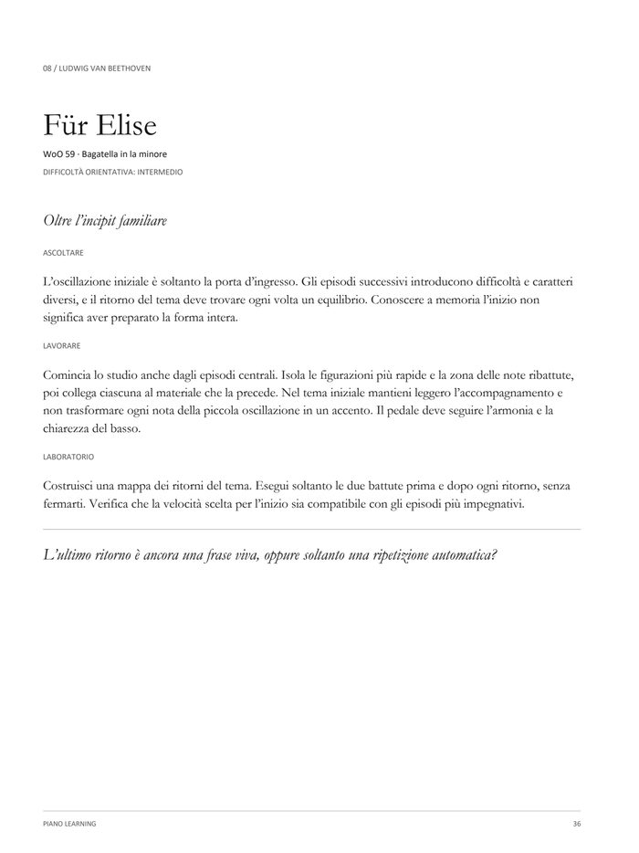
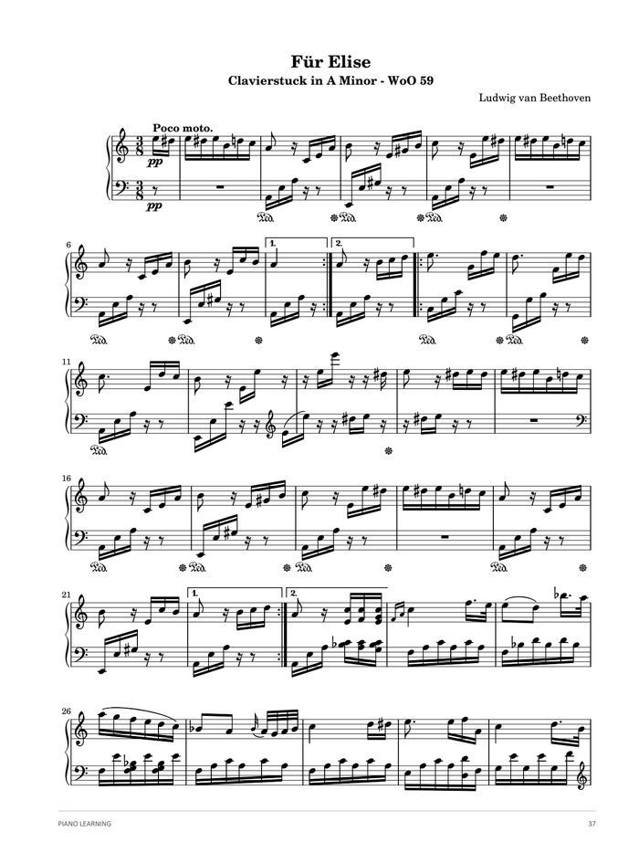

Sfoglia il libro Christmas at the Piano (Annotated)
Ventiquattro canti di Natale e otto melodie conosciute, ciascuno arrangiato in due livelli su pagine affiancate: la melodia con un basso semplice, poi con un accompagnamento in movimento. Un libro in grande formato da suonare a casa durante le feste e da regalare a chi sta imparando.
Livello 1: melodia e bassoLivello 2: accompagnamento
Contenuto, formato e ISBN
32 brani in due livelliDa Silent Night e Jingle Bells a Good King Wenceslas e al Coventry Carol.
Una nota per ogni arrangiamento64 brevi indicazioni di studio su pulsazione, fraseggio, posizione della mano ed equilibrio.
Fonti verificateOgni melodia confrontata con una stampa datata, elencata in fondo al libro.
Gruber · Mendelssohn · Adam · Brahms · Kirkpatrick · Gauntlett · Hopkins · carols
Ventiquattro capolavori del pianoforte, scelti attraverso tre secoli di musica e raccolti in un volume rigido di grande formato, interamente in italiano. Un libro da tenere sulla scrivania e in libreria, da sfogliare con calma e da regalare a chi suona.


Una nota di studioLo spartito
Contenuto, formato e ISBN
24 brani sceltiDa Bach, Mozart e Beethoven a Chopin, Debussy, Satie e Joplin.
Schede di studio originaliPer ogni brano: cosa ascoltare, come lavorarlo, un piccolo laboratorio e una domanda.
Fonti documentateProvenienza e crediti di ogni spartito, in un'appendice dedicata.
Bach · Mozart · Beethoven · Burgmüller · Chopin · Schumann · Mendelssohn · Debussy · Satie · Joplin
Ventiquattro capolavori del pianoforte, scelti attraverso tre secoli di musica e raccolti in un volume rigido di grande formato. Un libro da tenere sulla scrivania e in libreria, da sfogliare con calma e da regalare a chi suona.
Una nota di studioLo spartito
Contenuto, formato e ISBN
24 brani sceltiDa Bach, Mozart e Beethoven a Chopin, Debussy, Satie e Joplin.
Note di studio originaliPer ogni brano: cosa ascoltare, come studiarlo, un piccolo laboratorio e una domanda.
Fonti documentateProvenienza e crediti di ogni spartito, in un'appendice dedicata.
Bach · Mozart · Beethoven · Burgmüller · Chopin · Schumann · Mendelssohn · Debussy · Satie · Joplin